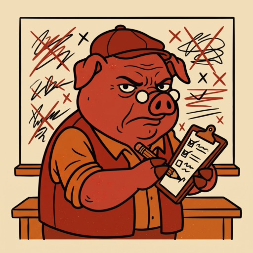

Draft

O Seu Pururuca anotou tudo. Cada escolha aqui vira prova contra você depois.
Quem pegou o quê
Últimas escolhas
Prêmios da rodada
Jornal da liga
Ranking da vergonha
Alface vale 2, Cadeirada 1, Vexame 2, Pé Frio 3. Quem lidera, lidera por mérito.